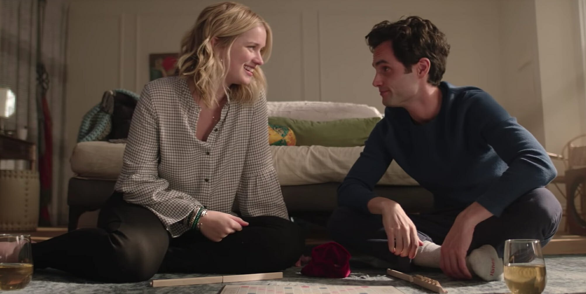

About Guinevere Beck
Who Beck Is
Beck is an ambitious, intelligent, and creative writer whose charm and vulnerability draw Joe Goldberg’s obsessive attention.

Beck's Personality
She is confident and witty on the outside but deeply introspective, empathetic, and sensitive, with insecurities that make her vulnerable to manipulation.
Beck's Personality
Beck is fiercely ambitious and driven, with her writing career at the center of her identity. She thrives on intellectual stimulation and creative expression, often seeking relationships and experiences that feed her artistic sensibilities. This ambition can make her appear self-assured and independent, yet it also contributes to moments of self-doubt when she questions whether she is living up to her own expectations or those of her peers. She has a tendency to internalize criticism and overthink social interactions, which amplifies her vulnerability in personal relationships.
Emotionally, Beck is deeply empathetic and intuitive, often sensing the feelings and needs of those around her. She genuinely wants to connect on a meaningful level, which draws people to her and makes her an appealing partner in Joe’s eyes. However, her empathy can also make her naive, as she sometimes misinterprets controlling or obsessive behaviors as acts of care or affection. She oscillates between longing for independence and craving intimacy, which creates tension in her romantic and social relationships.
Beck’s personality is also marked by contradictions. She is creative yet anxious, confident yet insecure, affectionate yet guarded. These contrasts make her multidimensional and relatable, but they also make her susceptible to manipulation. Her idealism about love—her belief that passion and understanding should coexist perfectly—blinds her to danger, particularly when Joe begins to blur the lines between romantic devotion and obsession. In the end, Beck embodies the tragic complexity of a character who is talented, vibrant, and fully human, yet caught in a web of circumstances she cannot fully control.

Beck's Relationships
Beck seeks meaningful connection and intellectual intimacy, yet her idealism and need for validation make her susceptible to dangerous obsessions, tragically with Joe.